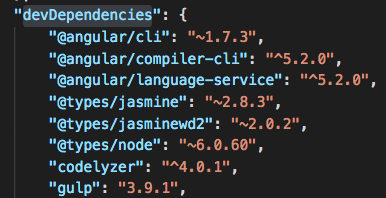
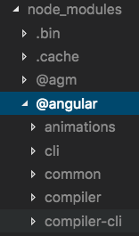

CommandBox vs Node.js
Nolan Erck
South of Shasta
About Me
- Software Consultant (southofshasta.com)
- Software Development, Training, Design
- ColdFusion, C++, Java, jQuery, PHP, .NET, HTML5, Angular, SQL, etc...
- Manager of SacInteractive User Group
- Reformed Video Game Developer (Grim Fandango, SimPark, StarWars Rogue Squadron, etc).
- Music Junkie
Slide deck and code samples are here:
github.com/nolanerck
commandbox-vs-node
For today's talk
- Screenshots and recorded videos
- No smoke and mirrors
- I'm merely avoiding hotel wifi
Let's get started!
We've all heard these things:
- JavaScript has all the cool toys!
- CFML is old, dying and only for legacy stuff!
Incorrect!
- CommandBox is here to save the day!
- All of the Node.js fundamentals are available to CFML developers
What is Node.js?
- App you install
- On laptop or server
- "JavaScript can run anywhere"
- In web browser (obviously)
- As a server side language (ala CFML)
- As a native CLI tool on your laptop
Installing Node.js
- Go to Nodejs.org
- Click one of these:

- It usually "just works"
- Regular updates are available
What is CommandBox?
- App you install
- On laptop or server
- "CFML from the command line"
- As a server side language (duh)
- As a native CLI tool on your laptop
Installing CommandBox
- Go to ortussolutions.com/products/commandbox
- Click one of these:
- It usually "just works"
- Regular updates are available
The score:
CommandBox 1, Node 1
The Command Line...
Launching Node.js
- Open a command prompt, type "node"
- This hapens:

Why did it say "undefined"?
- Not a bug, working as designed
- You see 2 things in the results:
- The output of your code
- And the return value of your code
- console.log() doesn't return anything, so you get "undefined"
Launching CommandBox
- Open a command prompt, type "box"
- This hapens:
The score:
CommandBox 2, Node 2
Running files via Node
- Type "node app.js", this happens:
Running files via CommandBox
- Type "execute app.cfm", this happens:
The score:
CommandBox 3, Node 3
Built-in help from Node.js
- Type "node --help", this happens:
Built-in help from CommandBox
- Type "box help", this happens:
Built-in help from CommandBox
- But wait, there's more!
- CommandBox is broken up into "namespaces"
- Each "namespace" contains many different commands
- Switch to a new namespace to see more detailed help
The score:
CommandBox 4, Node 4
How does Node do it?
- Running a JavaScript application engine on your computer (or server)
- Code is processed thru the engine
- Spins up different services as needed
- Customizable per project via ".json" config files
How does CommandBox do it?
- Running a CFML application engine on your computer (or server)
- Code is processed thru the engine
- Spins up different services as needed (modules, packages)
- Customizable per project via ".json" config files
The score:
CommandBox 5, Node 5
Setting up a Node Project
- Type "npm init", this happens:
Setting up a CommandBox Project
- Type "box init", this happens:
The score:
CommandBox 6, Node 6
Dependencies Witih Node
- In package.json, "dependencies" section
Things your app needs to run - jquery, lodash, Angular, libaries from your team, etc
- "npm install"
- Node goes out to "the registry" and grabs those assets
- Puts them in "node_modules" folder
Dependencies Witih Node
Dependencies Witih Node
Dependencies Witih CommandBox
- In box.json, "dependencies" section
Things your app needs to run - jquery, lodash, Angular, libaries from your team, etc
- "box install"
- CommandBox goes out to "the cloud" and grabs those assets
- Puts them in "installPaths" folders
Dependencies Witih CommandBox
Dependencies Witih CommandBox
The score:
CommandBox 7, Node 7
Dev Dependencies With Node
- In package.json, "devDependencies" section
Things your app needs to build - CLI Tools, Typescript transpiler, Code Analyzer, Linter, etc
- Angujlar CLI, TypeScript, Webpack, etc
- "npm install --dev [thing]"
- Node goes out to "the registry" and grabs those assets
- Puts them in "node_modules" folder
Dev Dependencies Witih Node
Dev Dependencies Witih Node
Dev Dependencies Witih CommandBox
- In box.json, "devDependencies" section
Things your app needs to build - jquery, lodash, Angular, libaries from your team, etc
- "box install --saveDev [thing]"
- CommandBox goes out to "the cloud" and grabs those assets
- Puts them in "installPaths" folders
Dev Dependencies Witih CommandBox
Dev Dependencies Witih CommandBox
Node has a Registry: npm
- Magic place in "the cloud" where reusable JavaScript lives
- "npm install [some library]"
- Node talks to "the registry", downloads the lib
- These dependencies live in the "node_modules" folder of your project
CommandBox has a Registry: ForgeBox
- Magic place in "the cloud" where reusable CFML lives
- "box install [some library]"
- CommandBox talks to "the registry", downloads the lib
- These dependencies live in the "node_modules" folder
Using Node and Docker
Using CommandBox and Docker
- Official Docker images from Ortus Solutions
Node has helpers like Gulp and Grunt
CommandBox has Task Runners
Using Node to Make Games
- Tons of resources
- Many game engines support JavaScript
- Can get as simple or advanced as you like
Using CommandBox to Make Games
Using both JavaScript *and* CFML for Games!
- Minh Vo's preso on React at Gov't Summit
- draftstudios.com
-
Giancarlo Gomez's preso on WebSockets:
"Refreshing Your UI: Modern Uses for WebSockets"
Contributing to Node.js
- Main engine is written in C++, not JavaScript
- Add-ons can be JavaScript but not the core
- e.g the Angular CLI, create-react-app
Contributing to CommandBox
- 90% of the core is CFML
- Remaining 10% is Java
- Installing CommandBox also gives you the source code!
Okay so what's the catch?
There isn't one
- CommandBox is...
- Free, open source, well supported
- Supports all CFML engines
- Lucee and Railo
- Adobe CF as far back as version 9
CommandBox Really is a Game-Changer
- You can do all the cool things that Node/JavaScript developers do
So which do I have installed for development?
Node or CommandBox
Both
Uses for Node.js
- It's ubiquitous with modern front-end development
- Front-end tooling requires Node
- Angular, Vue, React, PhoneGap, Grunt, Gulp, Stylus, SASS, SCSS, LESS, WebPack, Babel, TypeScript, etc
- This is a "given" nowadays
Uses for CommandBox
- This is the way to tell modern CFML developers from legacy programmers
- Spinning up Dev environments, testing everything, containerization, onboarding new team members
- Managing production web servers
- Building CLI tools for development AND production servers!
Other Resources
- South of Shasta - onsite and remote training
- nodejs.org
- commandbox.ortusbooks.com
- Ortus Solutions
- Talk to people at the conference!
- Preso tomorrow: "Real World Scenarios for Modern CFML"
Learning in 30 minutes a day.
Questions? Comments?
- southofshasta.com
- nolan@southofshasta.com
- Twitter: @southofshasta
- Github: nolanerck
- Slides and code:
github.com/nolanerck/commandbox-vs-node
Thanks!